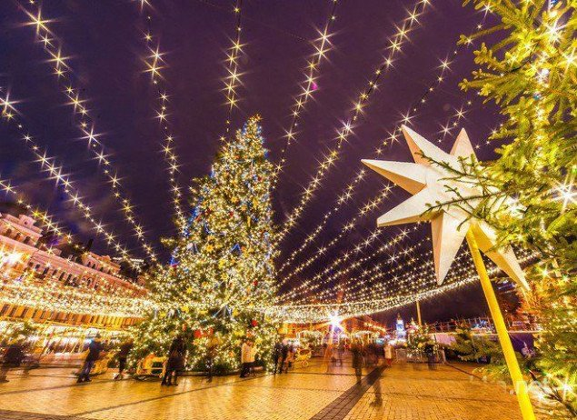

Spotlight on: winter’s festive season in Kyiv
Kyiv may not be the first city that comes to mind for Christmas travel.
However, visiting the Ukrainian capital during the festive season may change your mind completely.
In December and January, this eastern European metropolis becomes a sparkling winter wonderland,
with a variety of cozy markets and tasty street food, not to mention its impressive ancient cathedrals and
traditional celebrations.

Get into the festive spirit on St Nicholas Day
Ukraine celebrates St Nicholas Day on 19 December.
This day feels like a rehearsal of Christmas, with people gifting each other sweet treats.
A few days earlier, on 16 December, the Christmas fair at historic Kontraktova Ploscha in Kyiv
officially brings the holiday spirit to the capital, with pretty rows of wooden houses selling various local delights,
handmade goods and warm wine.

Experience traditional Orthodox Christmas
While the celebration of New Year has a party feel, Christmas in Kyiv is a whole other story.
This is a more solemn holiday focusing on the family and tradition.
As the majority of the Ukrainian population is Orthodox, Christmas is celebrated according to the Julian calendar on 7 January.
One of the most important traditions is Svyatyi Vechir (Holy Supper),
when families gather around the dinner table with 12 dishes representing 12 months of the year.
To get a sense of this holiday’s true spirit in the authentic setting of a Ukrainian village,
head to the Pyrohiv Museum of Folk Architecture which organises a Christmas celebration with singing,
dancing and sampling of festive dishes.